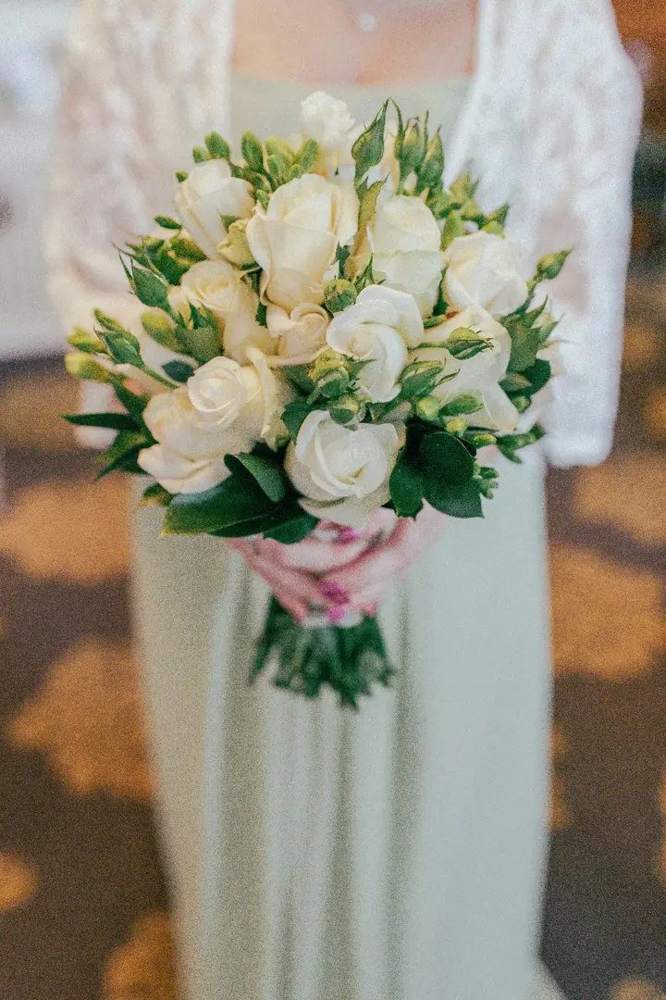
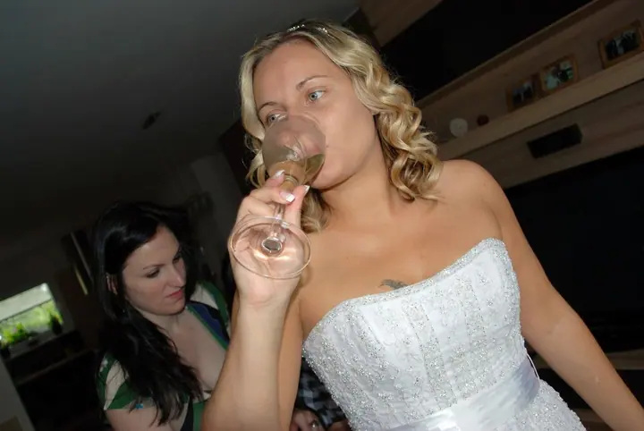
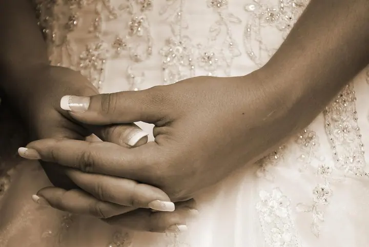

jedna
Svatební fotografie
Svatby fotím velmi ráda, protože jsou to šťastné okamžiky v životě. Jsem s vámi už od ranních příprav, u česání, šněrování šatů i u posledních úprav před obřadem.


Jmenuji se Martina Lukavská a fotím svatby v Teplicích. Svatby fotím velmi ráda, protože jsou to šťastné okamžiky v životě. Fotím je už od rána, kdy se natáčí lokny a šněrují šaty.
Více o mně
Co fotím
jedna
Svatby fotím velmi ráda, protože jsou to šťastné okamžiky v životě. Jsem s vámi už od ranních příprav, u česání, šněrování šatů i u posledních úprav před obřadem.

Svatby jsou šťastné okamžiky v životě


Za objektivem
Jsem svatební fotografka z Teplic. Svatby mám ráda, protože jsou to šťastné okamžiky v životě, a takové chvíle stojí za to mít uložené na fotkách.
Ráda začínám už u příprav. Česání, nasazování čelenky, šněrování šatů, smích s kamarádkami i chvilka ticha u okna před odjezdem na obřad. Fotím barevně, a když se k chvíli hodí, i černobíle nebo v teplé sépii.
Moje pracovní alba najdete na Rajčeti. Když si je seřadíte podle názvu, zobrazí se vám jako první. Pokud se vám moje fotky líbí, zavolejte mi nebo napište a domluvíme se na vašem termínu.
Martina
Zavolejte mi na 602 618 642 nebo napište e-mail. Řekněte mi termín a místo svatby a já vám dám vědět, jestli mám volno.
Probereme, jak bude váš den vypadat, od kolika hodin mám být u příprav a na čem vám na fotkách nejvíc záleží.
Přijedu za vámi a fotím přípravy, obřad i chvíle po něm. Vy se věnujete sobě a svým blízkým.
Fotky vyberu a upravím a pak vám je předám. Přesný termín a způsob předání si domluvíme předem.
Portfolio
Fotografie jsou ilustrační
Otázky
Jsem z Teplic a svatby fotím hlavně tady. Pokud se berete jinde, napište mi a domluvíme se.
Ano, a moc ráda. Česání, oblékání šatů a poslední úpravy patří k nejhezčím chvílím celého dne.
Na Rajčeti. Pokud chcete vidět přednostně má pracovní alba, seřaďte si alba podle názvu.
Cena záleží na rozsahu focení a délce dne. Napište mi nebo zavolejte a já vám pošlu nabídku přímo pro vaši svatbu.
Napište pár vět o tom, co si představujete. martina.lukavska@seznam.cz · +420 602 618 642